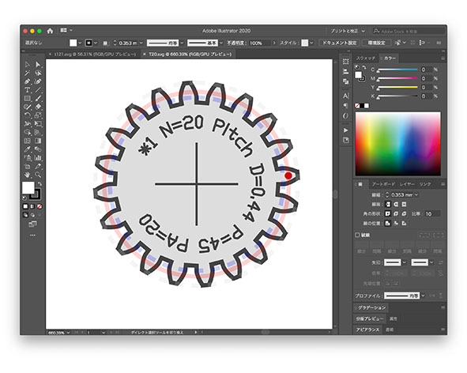
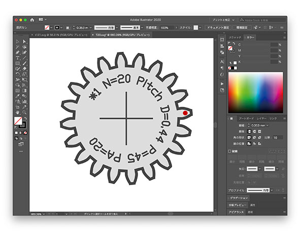
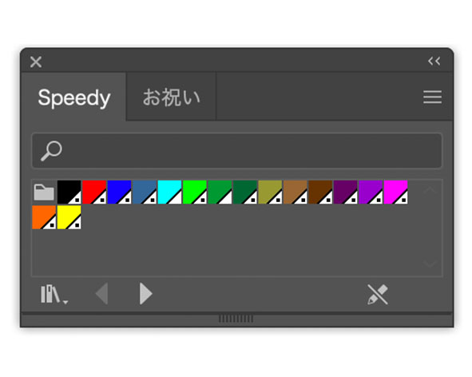
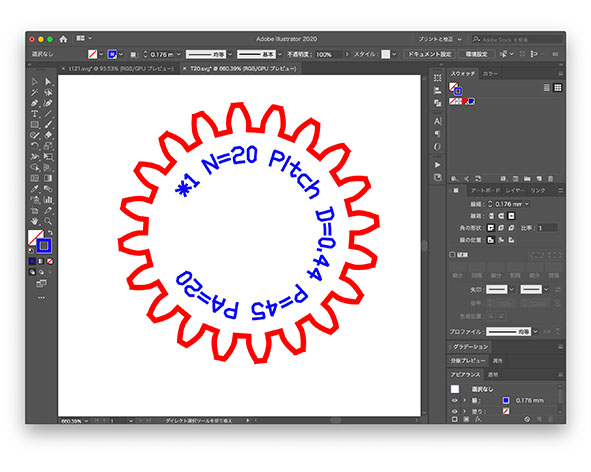
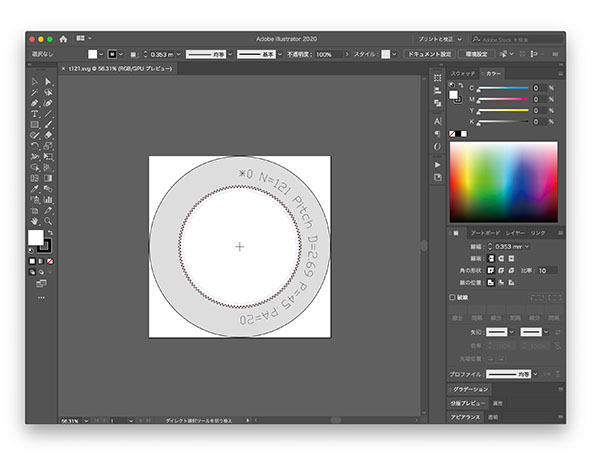
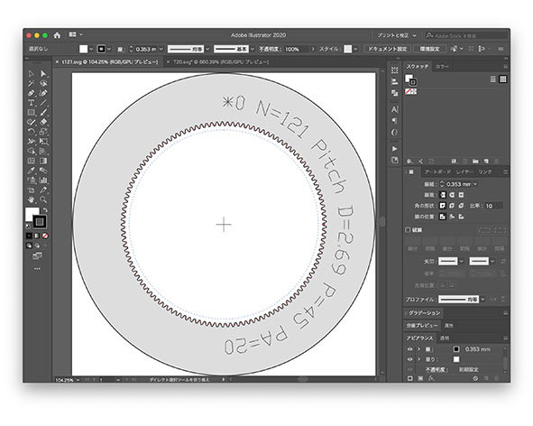
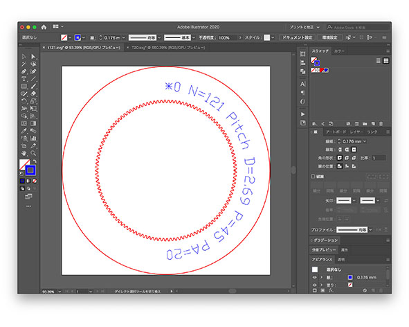

ギアには2つの種類がある
External＝外側にギア
Internal＝内側にギア
今回は、External=20、Internal=121を使う
今回はレーザーカッターでMDFを切っていくのでダウンロードしたエクスターナル、インターナルの素材をイラレで改変していく

薄い赤、薄い青、赤い丸、十字を消す


彫刻は黒色
黒以外の色は赤色から右に行くにつれ順番にカットされていく
カットしたい線を0.001mmにする
カラーパレット「speedy」の赤に設定する

インターナルも同じ要領でやっていく



作ったスピログラフを実際にやって見た動画↓